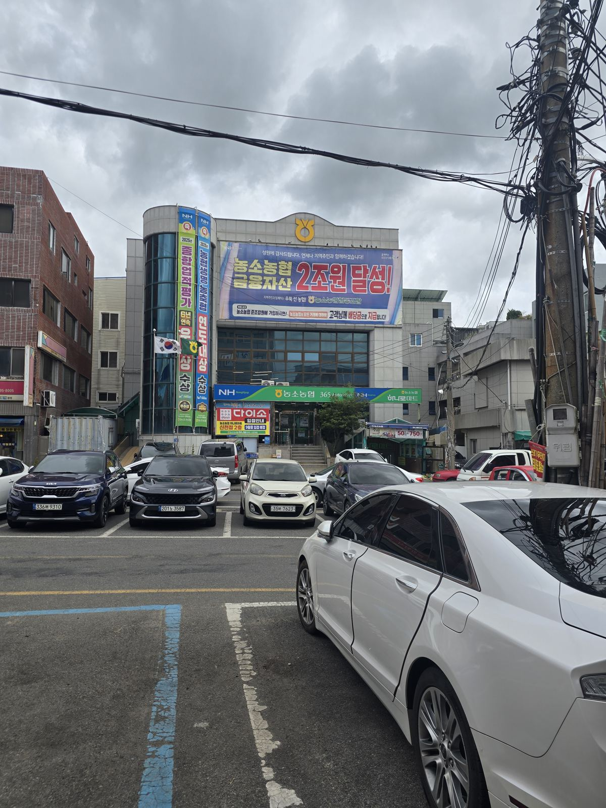

반찬과 손맛
석박지 스타일 깍두기와 겉절이, 직접 담근 반찬만 올립니다.
직접 담근 반찬
국물만큼 정성 들인 밑반찬
깍두기와 겉절이도 직접 담급니다.

직접 담근 깍두기
석박지 스타일로 담근 깍두기입니다.
사진 준비 중
겉절이
신선하게 무쳐낸 겉절이입니다.
사진이 확보되는 대로 반찬 종류를 하나씩 추가할 예정입니다. 지금은 확보된 사진이 있는 깍두기만 실사진으로 보여드리고, 나머지는 "사진 준비 중" 표시로 남겨둡니다.